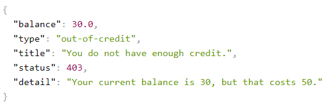

A brief introduction of Problem details
If you have developed HTTP APIs, I’m sure that many times you have had the need to define new error response formats for HTTP APIs to return to your clients. The most common way to do this is using HTTP Status Codes but sometimes is not sufficient to communicate enough information to the clients. For example, imagine a banking HTTP API that allows customers to make online transactions and this call returns Forbidden (403) response telling the client that the customer isn’t allowed to make this transaction, but why? Maybe the customer doesn’t have enough credit? or he has a maximum limit of money to transfer?
To provide additional information to our clients we would need to extend the response body with some kind of document (JSON or XML). The problem I’ve seen in many HTTP APIs is that usually these documents are not the same. It’s very frustating for a client that consumes many HTTP APIs because there isn’t a standard way to deal with these errors and it would need to implement different ways to work with them.
Due to the need to standarize an error response format for HTTP APIs, the Internet Engineering Task Force (IETF) published in March 2016 a document that defines a “problem details” as a way to carry machine-readable details of errors in a HTTP response to avoid the need to define new error response formats for HTTP APIs (Not reinvent the wheel).
Let me show you an example of HTTP response of JSON problem details
HTTP/1.1 403 Forbidden
Content-Type: application/problem+json
Content-Language: en
{
"type": "https://example.com/probs/out-of-credit",
"title": "You do not have enough credit.",
"detail": "Your current balance is 30, but that costs 50.",
"instance": "/account/12345/msgs/abc",
"balance": 30,
"accounts": ["/account/12345","/account/67890"],
"status": 403
}
The format of the message is application/problem+json media type (It could be application/problem+xml also) and we have several members in the response body:
- type (string): URI that identifies the problem detail type. In this case “out-of-credit”.
- title (string): A short human-readable summary about the problem.
- detail (string): A human-readable explanation about the problem.
- status (number): HTTP Status Code.
- instance (string): A URI reference that identifies the specific occurrence of the problem.
We can extend the problem details object with additional members, for example the previous message defines two members “balance” and “accounts” to communicate additional information to the client.
Problem details in ASP.NET Core 2.1
When ASP.NET Core 2.1 came out, the ASP.NET Core team added support for problem details. The class that represents a problem details object is ProblemDetails
An example of use:
[HttpPost]
public ActionResult Transfer()
{
try
{
/// Make a transfer
}
catch (OutOfCreditException ex)
{
var problemDetails = new ProblemDetails
{
Status = StatusCodes.Status403Forbidden,
Type = "https://example.com/probs/out-of-credit",
Title = "You do not have enough credit.",
Detail = "Your current balance is 30, but that costs 50.",
Instance = HttpContext.Request.Path
};
return new ObjectResult(problemDetails)
{
ContentTypes = { "application/problem+json" },
StatusCode = 403,
};
}
return Ok();
}
We alse have the ValidationProblemDetails class for validation errors. This class inherits from ProblemDetails and you can see an example in the following code:
[HttpPost]
public ActionResult Transfer(TransferInfo model)
{
if (!ModelState.IsValid)
{
var problemDetails = new ValidationProblemDetails(ModelState);
return new ObjectResult(problemDetails)
{
ContentTypes = { "application/problem+json" },
StatusCode = 403,
};
}
return Ok();
}
The two previous examples have the same problem: They are polluting our controllers (Put your controllers on a diet). IMHO controllers act as mediators: receive the request from the client, transform into a command, send it and response to the client. Let’s see how to move these validations out of controllers into a centralized place.
Model validations
For model validations we need to configure ApiBehaviorOptions in our ConfigureServices:
public void ConfigureServices(IServiceCollection services)
{
services
.AddMvc()
.SetCompatibilityVersion(CompatibilityVersion.Version_2_2);
services.Configure<ApiBehaviorOptions>(options =>
{
options.InvalidModelStateResponseFactory = context =>
{
var problemDetails = new ValidationProblemDetails(context.ModelState)
{
Instance = context.HttpContext.Request.Path,
Status = StatusCodes.Status400BadRequest,
Type = $"https://httpstatuses.com/400",
Detail = ApiConstants.Messages.ModelStateValidation
};
return new BadRequestObjectResult(problemDetails)
{
ContentTypes =
{
ApiConstants.ContentTypes.ProblemJson,
ApiConstants.ContentTypes.ProblemXml
}
};
};
});
}
We have to remark on two things:
- The order in which you register the services matter, you must register AddMvc() before configure ApiBehaviorOptions otherwise you won’t see the correct response.
- Your controllers must be decorated with the [ApiController] attribute:
[Route("api/[controller]")]
[ApiController]
public class BankController : ControllerBase
Handle errors
We have seen how to the validation errors works, but we still need to see how to handle exceptions in our application in order to return a problem details message. Thankfully, Kristian Hellang has already created a NuGet package for this purpose Hellang.Middleware.ProblemDetails.
Install-Package Hellang.Middleware.ProblemDetails -Version 3.0.0
Once we have installed it, we need to configure it. Open your Startup class and add the following code to the ConfigureServices method:
public void ConfigureServices(IServiceCollection services)
{
services
.AddProblemDetails(setup =>
{
setup.IncludeExceptionDetails = _ => Environment.IsDevelopment();
})
...
}
We only include exception details in the problem details messages when we are running in Development mode. It’ll help us to diagnose our HTTP API while we develop.
And finally we need to add problem details to the ASP.NET Core pipeline in Configure method in our Startup class:
public void Configure(IApplicationBuilder app, IHostingEnvironment env)
{
app
.UseProblemDetails()
.UseMvc();
}
If you want to test it, you can throw an exception in your action controller:
[HttpPost]
public ActionResult Transfer(TransferInfo model)
{
throw new Exception("Testing problem details");
return Ok();
}
Run your application and execute the action, you should see the following message:
As you can see (In Development mode) we have all the information available related to the exception but if we run our application in non-Development mode all this additional information dissapears:
We only need one more thing: What happens if I want to throw my own exceptions and map to custom problem details objects? No problem, You have a method called Map<> to map exceptions to custom problem details objects. Let me show you:
I’ve created a custom OutOfCreditException (This code must be in a service out of our controllers):
[HttpPost]
public ActionResult Transfer(TransferInfo model)
{
throw new OutOfCreditException(
"You do not have enough credit.",
balance: 30,
cost: 50);
return Ok();
}
I’ve created also my custom problem details object:
internal class OutOfCreditProblemDetails : ProblemDetails
{
public decimal Balance { get; set; }
}
The only thing we need left is to configure ProblemDetails how to map this exception with the problem details object. Open Startup.cs and change the method ConfigureServices:
public void ConfigureServices(IServiceCollection services)
{
services
.AddProblemDetails(setup =>
{
setup.IncludeExceptionDetails = _ => !Environment.IsDevelopment();
setup.Map<OutOfCreditException>(exception => new OutOfCreditProblemDetails
{
Title = exception.Message,
Detail = exception.Description,
Balance = exception.Balance,
Status = StatusCodes.Status403Forbidden,
Type = exception.Type
});
})
...
}
Run you app and call the controller action and you should see the following message:

Conclusion
In this post I’ve tried to show you a way of specifying errors in HTTP API responses using Problem details and how to avoid to reinvent the wheel in every HTTP API, making easier to our clients handle these messages in a simple and standard way.


Comments